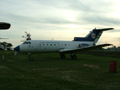
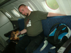

2005.09.04., vasárnap
athina & tomcat
blog
droidzóna
levrov
Dr. Palágyi Gábor meghívására ma a ferihegyi repülõskanzen vendégei voltunk. Gábor a múzeumot karbantartó alapítvány vezetõje, a skanzenben pedig a Malév által 1945 óta üzemeltetett repülõgépek láthatóak. Körülbelül ennyi, amit egy egyszerû látogató megtudhat, ha csak úgy arra jár, és történetesen nem olvasott fél életén át a repülésrõl. Nekünk azonban ennél jóval több jutott.
Meghívónkat, azaz Gábort egy kissé szétkapott Il-14-es körül találtuk meg, amelyet egy lelkes fiatal csapat tisztogatott éppen. Elnézést kért, hogy nem ér rá bennünket kalauzolni, de gyorsan elvitt kocsival a közeli benzinkúthoz, hogy elemet vehessek a fényképezõgépbe, aztán visszafelé bemutatott egy idõsebb úrnak, hogy majd õ lesz a mi idegenvezetõnk.
- Õ aztán mindent tud ezekrõl a gépekrõl - mondta. - 1933 óta repülte mindegyiket, még Kádár kormánygépén is volt fedélzeti mérnök. Ráadásul egyszer õ mentette meg a lezuhanástól. De ezt majd elmeséli.
Nagyváti Sándor, azaz Sanyi bácsi szerényen bólogatott, amikor a történetrõl kérdeztem. Igen, mondta, valóban így történt, Kádár lezuhant volna a Tu-134-essel, ha õ nincs ott. Aztán elmondta, hogy is történt ez.
1971-ben Kádár János és Fock Jenõ Ceausescu-nál jártak, egy nem túl barátságos hangnemû találkozón. A conducator megint nem bírt magával, ismét olyan szinten szekírozta az erdélyi magyarokat, hogy már az oroszok is fontolgatták, hogy segítenek a magyaroknak bevonulni és visszavenni a területeiket, mielõtt a feszültség kiszámíthatatlan eredményekre vezet. A tárgyalás félbeszakadt, Kádárék nagy dérrel-dúrral hazavonultak. Valahol Kelet-Magyarország fölött jártak, amikor a pilóták arra lettek figyelmesek, hogy a gép egyre nehezebben reagál a kormánymozdulatokra, valószínûleg jegesedik. Kiderült, hogy a jégtelenítõ rendszer felmondta a szolgálatot. Egy átlagos pilóta nem valószínû, hogy rögtön rájött volna a hiba okára: elszállt a gépben egy relé, ami azt érzékeli, hogy a repülõgép a földön áll-e vagy a levegõben van, és ha a földön, akkor nem engedi mûködni a jégtelenítõt. Sanyi bácsi - akkor még bácsi nélkül - hátraszaladt a gép végébe, kinézett a kémlelõnyíláson, és látta, hogy a vezérsíkokat már mintha cukormáz borítaná. Ekkor a gép már lassult, orrát leadta, és közel állt az átforduláshoz, ami a jegesedés okozta legveszélyesebb helyzet: a Tupoljev átbukfencezik, az orr a menetiránynak ellentétes irányba kerül, és pörögve lezuhannak. Gyorsan kitépte a relé kábeleit, így a jégtelenítõ fûtése beindult, és az utolsó pillanatban lökte le a veszélyes jégkoloncot. Kádár sohasem tudta meg, hogy életveszélyben volt, és a történetet csak repülõs berkekben mesélik manapság. Érdekes kérdés azonban, hogy mi lett volna, ha Nagyváti Sándor nem tud a relérõl, vagy nem tudja, hol van, Kádár lezuhan, aztán Ceausescu valószínûleg hiába magyarázta volna, hogy õk nem nyúltak a géphez...
A skanzen kapujánál ez az Il-18-as áll. Nagyon komoly gép volt ez a maga idejében, az elsõ szovjet interkontinentális utasszállító gép. Elsõ bemutatkozásaként Hruscsovot szállította New York-ba, ahol a repülõszakma helyi képviselõi napokig csodájára jártak.
Sanyi bácsi az Il-18 lépcsõjénél
A gép törzse belülrõl. Átmenetileg raktárnak használják. A kép bal oldalán látható mûanyag lemezek a Tu-154-es belsõ burkolatához tartoznak, azt ugyanis most alakítják át tárgyalóvá.
Pillantás a pilótafülke irányába
Fedélzeti adatrögzítõk, azaz "fekete dobozok"
Athina és Berta ismerkedik az Il-18 kezelõszerveivel
Kilátás a skanzenre
Ez a kis kerék szolgált az orrfutó kormányzására a földön
A másodpilóta kormánya
Következõ állomásunk a Tu-134-es, azaz a "Kistuskó" volt
Berta felfedezi az utasteret
Itt is megtekinthettük a pilótafülkét

Balra a kapitány, jobbra a másodpilóta, lent, az üvegezett orr-részben pedig a navigátor munkahelye
A mûszerfal
Ez itt a robotpilóta vezérlõegysége. Valójában ez egyfajta "sebességtartó automatika", amely tartja a pilóták által beállított magasságot és sebességet, de az irány és a magasság szabályozható kézzel is, ha ezeket a tárcsákat elfordítják. A "rendes" kezelõszerveket kitérítve a gép visszaáll kézi vezérlésre.
Innen is kinéztünk
A navigátor fülkéje
Tu-134 kívülrõl
Berta idõközben felfedezte, mennyi ürgelyuk van itt
A Tu-154-es következett. Sanyi bácsi is csak azt tudta elmondani errõl a típusról, amit mindenki, aki már repülte: hogy ez a világ egyik legkezesebb és legbiztonságosabb repülõgépe.
Üdvözöljük a fedélzeten!

A vészkijáraton át kimehettünk a szárnyra
"Hihi! Kint vagyok a szárnyon!"
"Hurrá! Én is..."
Törzshátsórész
Ezt látni a szárnyról
No és persze ennek is van pilótafülkéje. Hogyne lenne!
Sanyi bácsi elmagyarázta, hogy mûködött a Tu-154 automata leszállítórendszere, az ILS elõdje. A kifutópálya irányát rádiós jeladók révén találta meg a gép, az automata rendszer egészen harminc méteres magasságig vitte le. Ezután a pilótának a mûhorizontra rajzolt repülõgép-sziluettet kellett irányban tartania, míg földet nem ért.
Ez a gomb egyedülálló dolog az utasgépeken: automatikus átstartolásra szolgál. Néhány éve Szalonikiben ez mentette meg a Malév Tu-154-esét, amikor futó nélkül szálltak le.
Talán emlékeztek is erre az esetre, mely egyébként jól példázza a Tu-154 kiemelkedõ repülésbiztonsági paramétereit. A szaloniki repülõtér felett több gép várakozott leszállásra, ám a légiirányítók túl sûrûre fûzték a láncot, túl közel kerültek egymáshoz a gépek. Az elsõként leszálló gép az elõírt 30 km/h sebességgel taxizott a pályán, mögötte viszont már ereszkedett a magyar Tu-154. A magyar pilóták látták a pályát elálló másik gépet, de nem tehettek semmit, a másik gép pilótáinak meg nem jutott eszükbe, hogy talán kisebb lebaszást kapnak, ha megszegik a korlátozást és elkotródnak a pályáról, mintha elõírásszerûen beléjük szállna egy Tupoljev. A magyar gép már egészen alacsonyan volt, a pilótafülkében megszólalt a talajközelségjelzõ duda, ami jelzi, ha a futómû nincs kieresztve. Ezt a kapitány kikapcsoltatta, hogy ne zavarjon, a géppel pedig S-eket írt le, hogy késõbb érjen a kifutópályához, miközben a másodpilótát utasította, hogy figyelje a hegyeket, nehogy nekik ütközzenek. Így érkeztek le, csak mindketten elfelejtették, hogy nem eresztették ki a futót. Az utolsó pillanatban nyitották, de már nem volt idõ, hogy rendesen kinyíljon, így a futószáron csúsztak végig a betonon.
Az a gép ezeken a csavarokon csúszott a betonon, de így is képes volt biztonságos sebességgel újra felszállni
A malõr ellenére a gép újra el tudott emelkedni, és futóeresztés után rendben leszállt. A Tu-154-es ilyen strapabíró gép, még füves repülõtérrõl is üzemel, ha kell. Egyébként biztonsági okokból két hajtómûves üzemelésre tervezték, három hajtómûvel eszeveszett nagy teljesítmény-feleslege van. Sanyi bácsi említette, hogy amikor éjszaka szálltak fel Ferihegyrõl, rendszerint két hajtómûvel emelkedtek a város felett, hogy ne csapjanak nagy zajt, aztán csak odafenn adták rá a gázt a harmadik hajtómûre.
A szaloniki eset után egyébként a magyar pilótát elmarasztalták, bevonták a szakszóját, soha többé nem repülhetett. Mostanra állítólag egy alkoholista roncs. No de nézegessük tovább a képeket.

Ez a kosár szolgált a legkisebb utasok elhelyezésére
A navigátor munkahelye
Közben lelkesen szálldostak fölöttünk más gépek
A Tu-134 és a Tu-154 egymás mellett
Berta még mindig a fõürgész titulusra pályázott
Ez volt egykor a ferihegyi leszállító irányszögadó, az ILS elõdje
Az öreg Il-14-est elég viharvert állapotban találtuk. A fiúk szerint majd akkor lesz újrafestve, ha lesz ilyesmire pénz, de egyelõre a reptérüzemeltetés a múzeum takarításának díjával is évek óta tartozik.
Nagytakarítás nyomai fogadtak a fedélzeten
A pilótafülke. Ezt épp most burkolják be plexivel, mert sajnos bebizonyosodott, hogy a tuskó magyaroknak nem szabad engedni tapogatni a múzeumi tárgyakat. Fõleg a gyerekek nem bírnak magukkal, rendszeresen letördelik a kapcsolókat, tornásznak az antennákon, és a szülõk, tanárok mosolyogva figyelik, ahelyett, hogy a kezükre csapnának. Mindenféle figyelmeztetõ tábla hatástalan volt, így sajnos el kell zárni a látogatóktól a sérülékeny dolgokat. Kár, mert a világon ez volt az egyetlen repülõmúzeum, ahol a látogatók mindenhová beülhettek, mindent megtapogathattak.
A tetõablakon kipillantva ezt lehet látni
Elõre nézve pedig ezt
Il-14 szembõl
Athina mûvészfotója egy turbinalapát-koszorúról
Il-14 fekete-fehérben

Ez pedig egy Jak-40-es. Különleges gép ez is, a maga idejében nem utasgépként funkcionált, hanem mûszerek légi tesztelésére szolgált. Ez a gép egyébként még repülõképes, nem szokták kinyitni a látogatóknak, épp a már említett vandál hajlamaik miatt.
No és ez mi? Ez a Jak-40-es reflektorának izzószála, makróval. Szép.
A bejárat ezen a gépen hátul van

Fedélzeti fotel
Mûszerfal
Pillantás a szomszédos Il-14-esre...
... és a Mentõszolgálat egykori Mi-2-esére

Kapcsoló
Csatlakozó
Tengeri mérföld
Hajtómû-hõmérséklet
Az igen sikeres Jak-40-esnek volt egy továbbfejlesztett változata, a Jak-42, ami azonban finoman szólva nem váltotta be a hozzá fûzött reményeket. Kérdeztem Sanyi bácsit, volt-e tapasztalata a 42-essel. Mesélte, hogy kilenc 42-es zuhant le a Szovjetunióban, mire rájöttek, hogy mivel a vezérsíkot tartó csavarok és a hozzájuk tartozó anyák nem egy helyen készültek, komoly méretbeli eltérések voltak köztük, és ezért a terhelés hatására berágódó csavarok könnyen elnyíródtak.

A szomszédban épp a helyére gurult a LOT Boeing 737-52-ese

A távoli horizonton pedig igencsak égett valami. Elõtérben a Li-2-es, amit nem néztünk meg, hadd lássunk valamit legközelebb is.
Repülõorrok
Berta közben tetten ért egy ürgét, amint épp beslisszolt a lyukba
Neki is állt kibányászni

Nem volt egyszerû feladat
Végül rájött, hogy mégsem áshatja ki a négyes metrót, és hagyta a fenébe a pimasz ürgét
Naplementés kép. Míg Athina fotózgatott, mi Bertával és néhány alapítványos sráccal a Tu-154 kabinjában hallgattuk Sanyi bácsi történeteit. Pár napra elég lesz a Droidzónába, az biztos.
Másik naplementés kép
Vendéglátóink
Harmadik naplementés kép
És végül: egy negyedik naplementés kép
Ezúton köszönöm még egyszer Gábornak, Sanyi bácsinak, és mindenki másnak ezt az érdekes és élménydús látogatást! Mindenkinek javaslom, ha tehetitek, látogassatok ki Ferihegy II-re, és nézzétek meg ezt a skanzent. Legjobban sikerült fényképeink nagy felbontásban itt találhatóak, egy 5 MB-os ZIP file-ban.